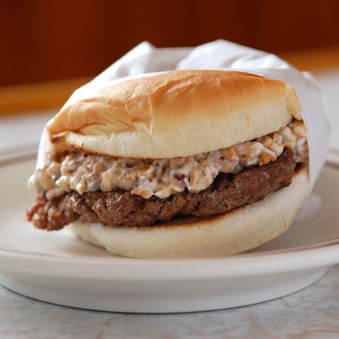

The Nutburger

Description
Nuts work so well on a burger because they are salty and contain
tasty oils. What nuts add, in addition, is a texture that is unlike any other
food out there.
Bacon and crisp lettuce can contribute a nice crunchy
texture to a hamburger, but it’s hard to find anything to match the
mouthfeel of nuts.
Ingredients
- 150g roasted salted peanuts (without shells or skins)
- 120ml of mayonnaise mixed with 2 teaspoons sugar
- neutral oil
- 1kg fresh-ground meat
- salt
- soft white buns, toasted
Steps
- Shortly before you cook the burgers, crush the peanuts by laying them
out on a cutting board or butcher block and covering them with a clean
kitchen cloth. Smash with a mallet or rolling pin until the peanuts are
crumbled (if you’ve made a powder, you’ve gone too far).
- Mix the crushed peanuts with the mayonnaise in the
small mixing bowl until combined. The topping should have a relatively
thick consistency. Set aside.
- Preheat the cast-iron skillet over medium heat and add a drop or two
of peanut oil to coat the surface.
- Place the ground chuck in the medium mixing bowl and use the salad
scoop to make balls of beef, placing them in the skillet as you go.
- Add a generous pinch of salt to each ball of beef and, using the stiff
spatula, press them down hard. Once flat, don’t touch them again. Let
cook for 2½ minutes or until reddish liquid begins to form on the surface
of the patties.
- Flip them once, and resist the temptation to press them again. Cook
for another 2 minutes or until cooked through.
- Transfer the patties to the toasted buns and top with a heaping
spoonful of the peanut condiment followed by the top bun. Serve
immediately.